第一段
小学时，一场车祸导致我的脖子歪向右边。从那以后，我变得特别敏感，即使是别人不经意的一瞥，都会成为射向我的利箭。有一次，当全班朗读“鹅，鹅，鹅，曲项向天歌”时，我觉得同学们的目光都落在我歪着的脖子上，我好像被烈日炙烤着。
小学时，一场车祸导致我的脖子歪向右边。从那以后，我变得特别敏感，即使是别人不经意的一瞥，都会成为射向我的利箭。有一次，当全班朗读“鹅，鹅，鹅，曲项向天歌”时，我觉得同学们的目光都落在我歪着的脖子上，我好像被烈日炙烤着。
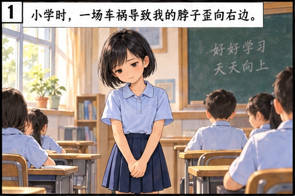
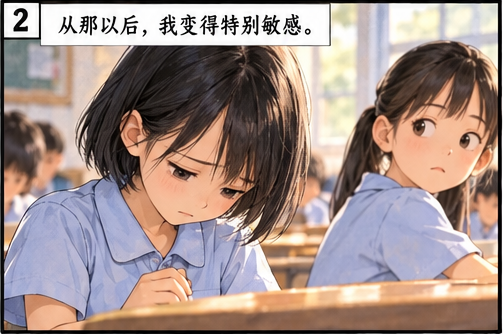
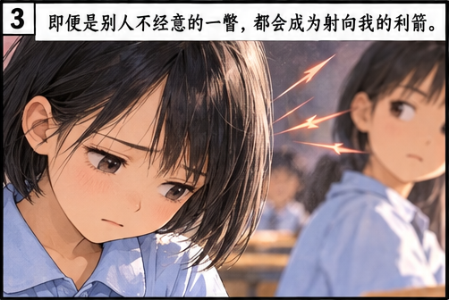
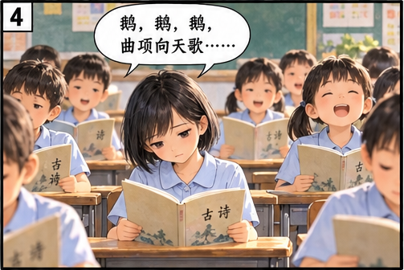
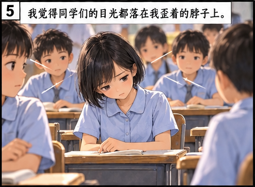
升上中学后，身边的同学都在社交媒体上分享自己和朋友的照片。我只能用沉默和独来独往武装自己，摄像头成了我最大的假想敌。因为不管我怎么打扮，也掩饰不了自己的缺陷。在我看来，丑小鸭就是丑小鸭，永远都成不了天鹅。
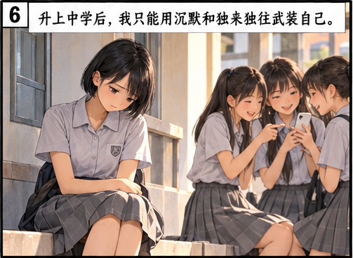
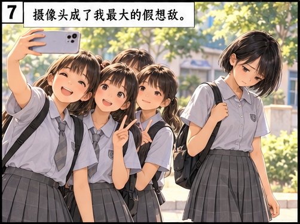
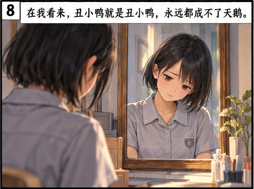
一天，喜爱摄影的级任老师——陈老师，提议办一个“展现最美的自己”照片展。她会为每个同学拍一张个人照，然后贴在布告栏上。大家都兴致勃勃，叽叽喳喳地讨论着摆什么姿势好。我的心却沉到了谷底。同学们一个个站到教室前，大方地摆出各种姿势让老师拍照。
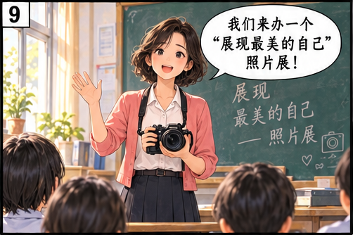
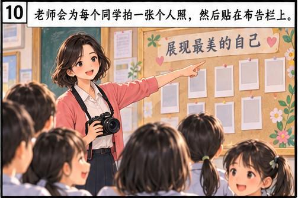
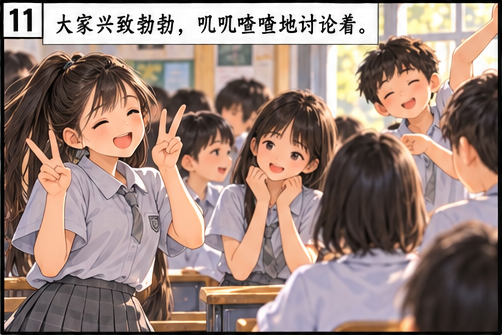
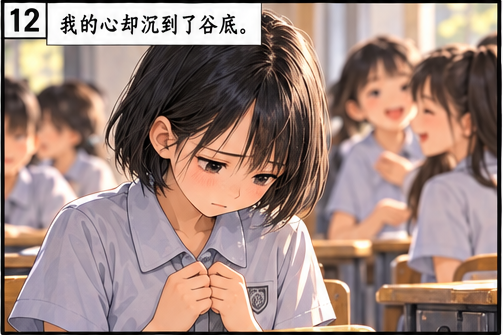
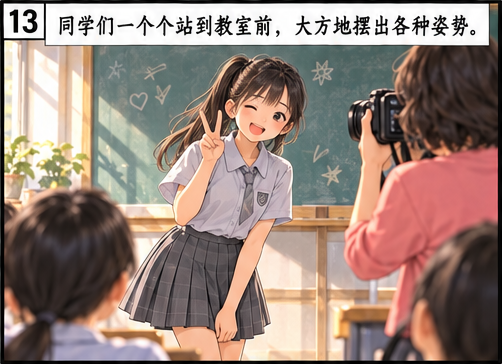
“宜欣，快来拍照！”我最不想听到的那句话还是响起了。我慢吞吞地走上前，拘束地站在讲台上，心里一片慌乱。原本嘈杂的教室突然变得无比安静。同学们都注视着我，这让我变得更加局促不安，脸红得发烫。这时，陈老师走过来问道：“宜欣，你觉得你最美的姿势是什么？”
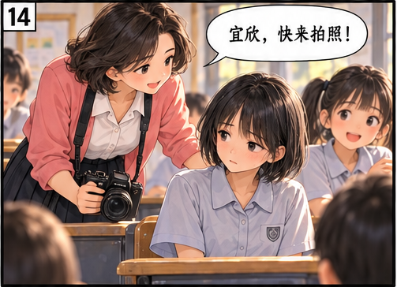
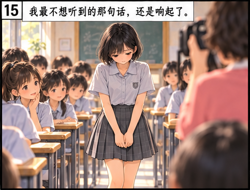
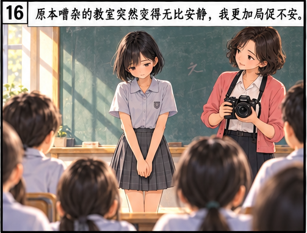
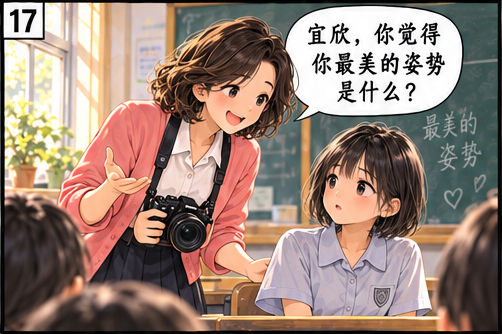
“我……我没有什么美的姿势。”我沮丧极了。
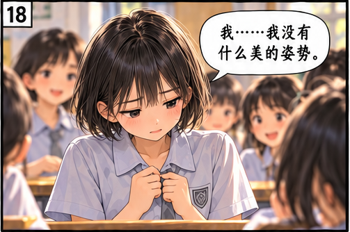
陈老师笑着大声说：“你错了，这个世界上每个人都有自己最美丽的姿势，都可以为这个世界留下最美的镜头！”她接着对大家说：“我们一起帮宜欣设计一个最美的姿势。”
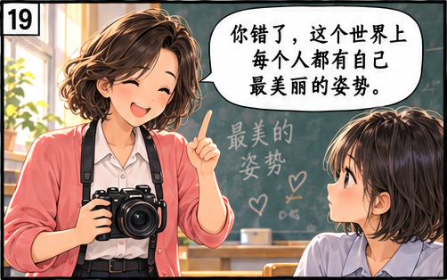
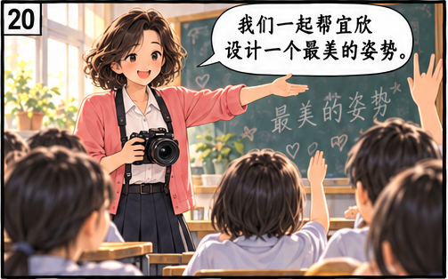
陈老师一说完，同学们便七嘴八舌地提建议。“宜欣的脸型美，可以侧拍！”“可以摆出遥望远方的姿势！”热心的甜甜直接跑过来，让我用右手托住右腮，再用左手托着右臂，做出若有所思的样子。我一抬头，“咔嚓”一声，这个姿势定格在陈老师的相机里。
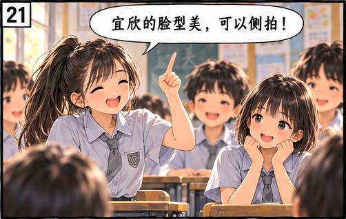
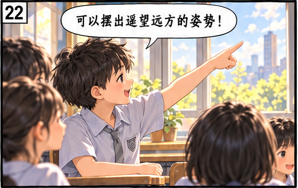
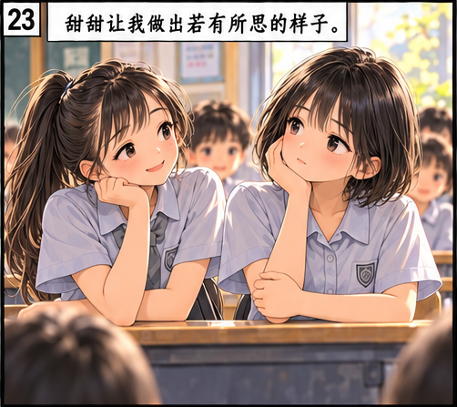
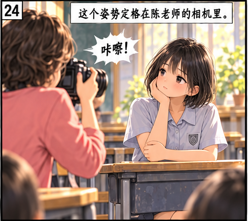
隔天早上，我一进教室就看到同学们围在布告栏前。甜甜一看到我便把我拉过去，说道：“宜欣，快看，你的照片多好看！”其他同学也纷纷点头附和：“是啊，宜欣真美，而且看起来好睿智啊！”这时，不知是谁开始鼓起掌来，渐渐地，掌声连成一片。同学们的话语和掌声令我感动不已，不知不觉间，泪水模糊了我的视线。
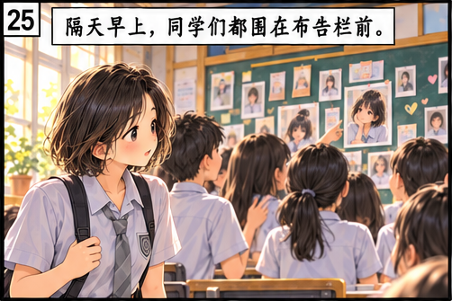
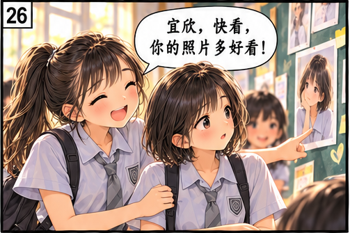
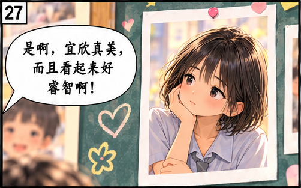
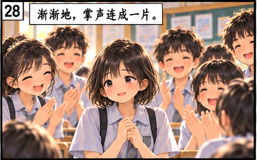
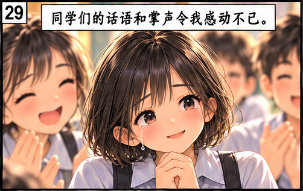
那张照片和同学们的肯定不但帮我找到最美的姿势，也帮我找回了最宝贵的信心和勇气。我惊讶地发现，同学们一点儿都不在意我的缺陷。原来，我也可以很美！我开始突破自己的心防，主动与同学交流，还结交了许多好朋友。
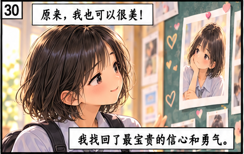
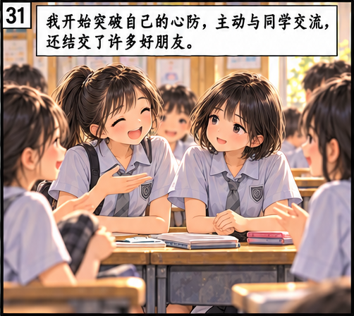
其实，每个人或多或少都有不完美的地方。但是，我们都可以找到自己最美的姿势，都可以活得自信，活出精彩。
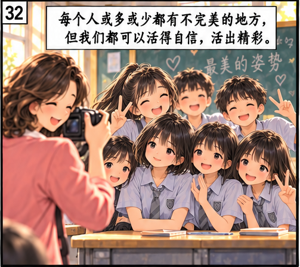
本文改编自张翔的《每个人都能以最美的姿势活着》。
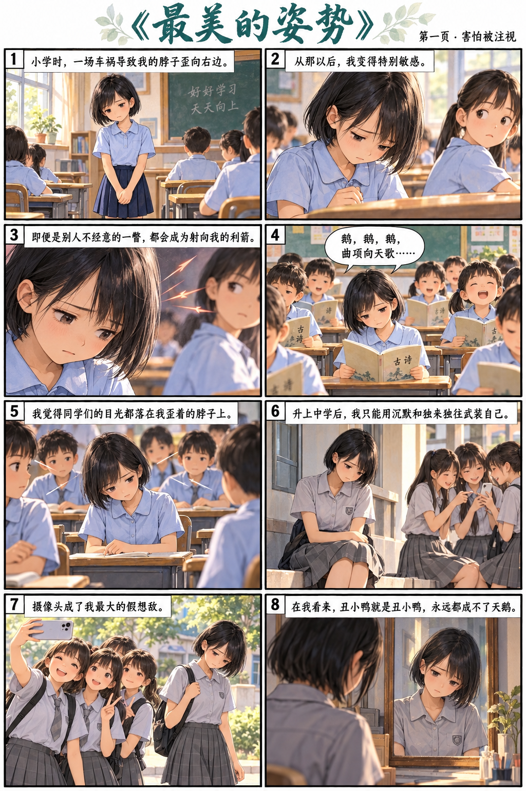
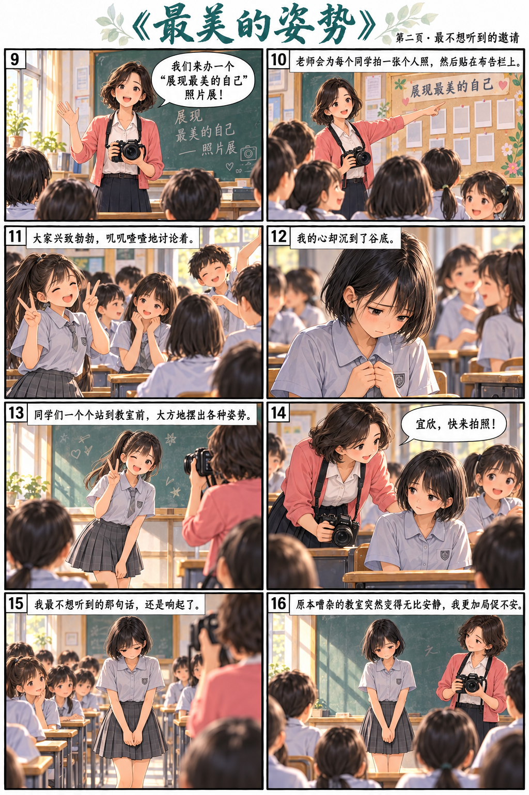
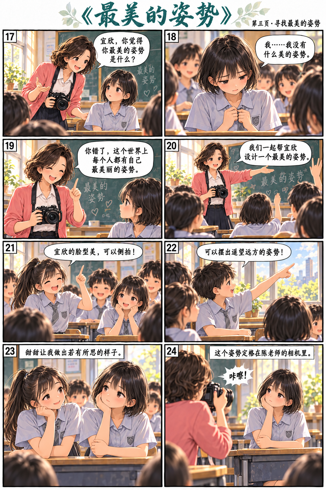
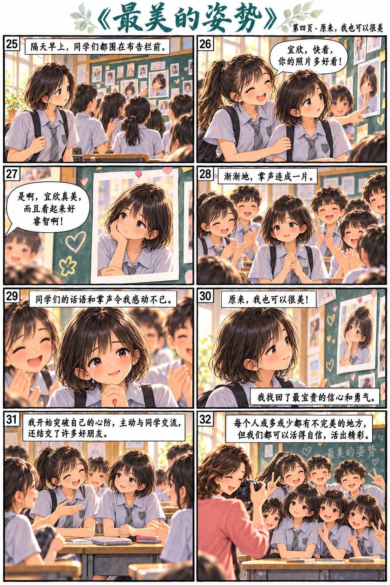